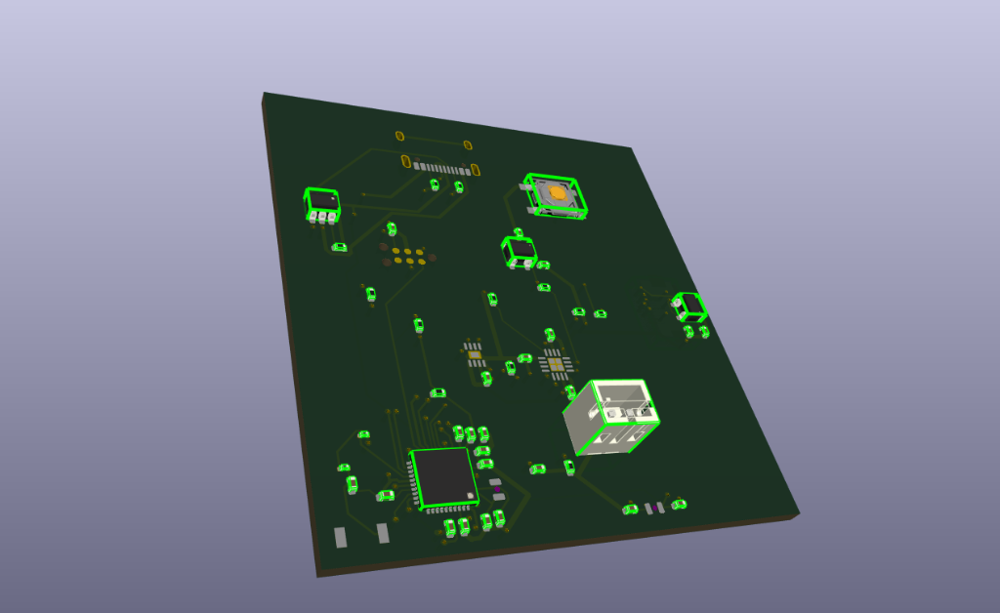
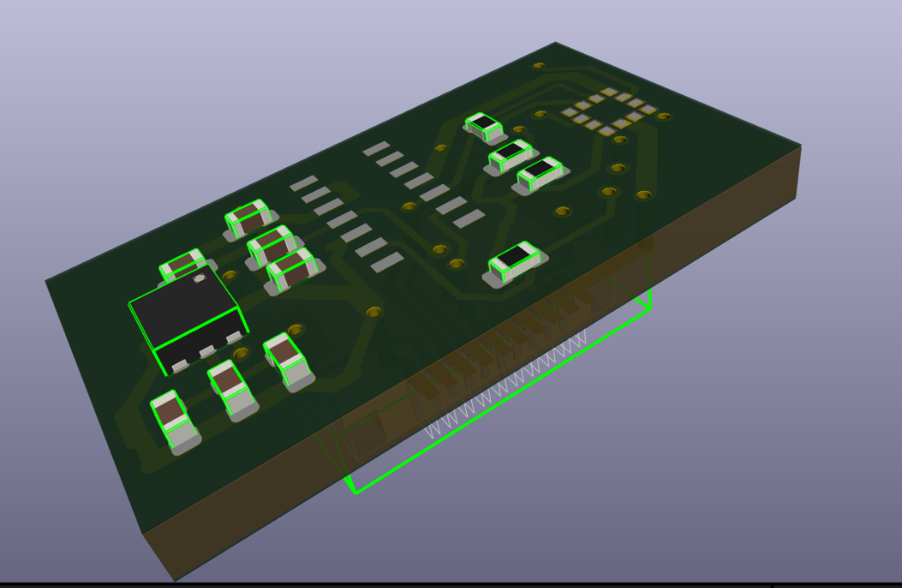
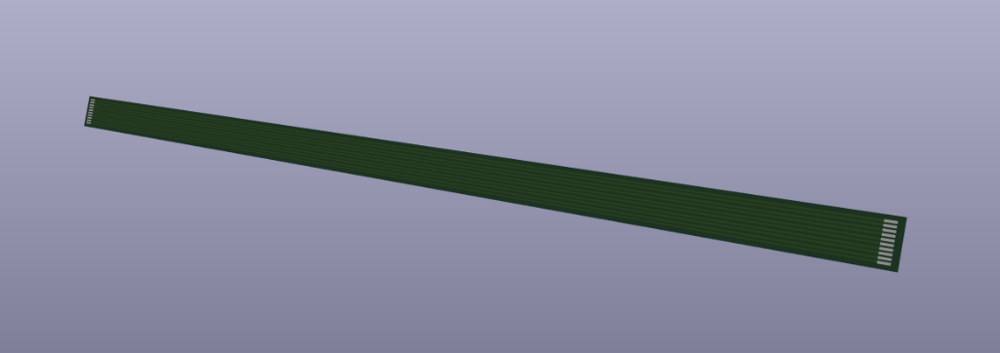
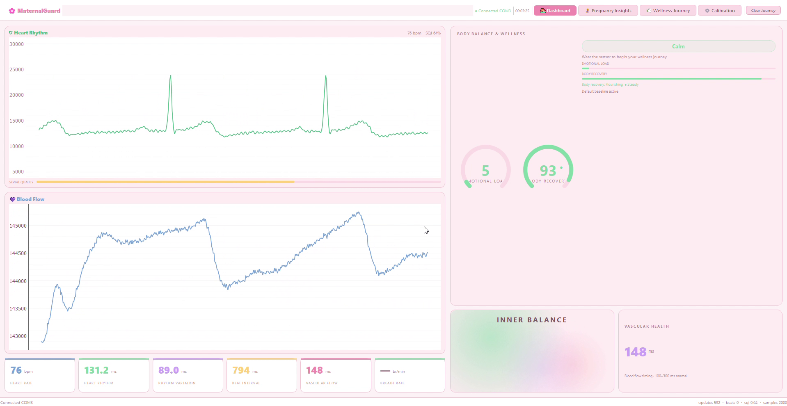

Novara — Wearable Health + AI Platform
Novara is a complete wearable health device I designed and built from scratch. It measures both the electrical heart beat (ECG) and optical blood pulse (PPG), plus body temperature and movement. By combining these signals, it can track real cardiovascular health—like early signs of high blood pressure—and check mental stress accurately without false alarms.
The Big Picture: Real Health Tracking Meets Practical AI
Most smartwatches try to guess stress or emotion from a single sensor. But as my earlier experiments proved, things like sleeping poorly, having a mild fever, or just standing up completely fool single-sensor algorithms.
Novara was built to solve this from the ground up: I designed the physical circuit board in KiCad, wrote the code that runs on the chip, and created a live wireless dashboard so doctors or users can see clean heartbeats, pulse timing, and true recovery metrics.
What was I trying to achieve?
Can we build a small, wearable device that reads heartbeats and blood flow with medical-grade accuracy, calculates heart metrics in real time (under 15 milliseconds), and avoids false alarms from fever or movement—all while running smoothly on battery?
Building the Physical Device (KiCad PCB)
Novara is split into separate modules so that sensitive heart sensors stay far away from electrical noise created by Bluetooth and battery circuits.
| Part of Device | Chips / Hardware | What It Does |
|---|---|---|
| Main Processing Board | ESP32-S3 Microcontroller | The device's brain: handles Bluetooth, battery charging, power regulation, and fast on-device math. |
| Satellite Sensor Board | Heart (ECG) + Optical Pulse (PPG) Sensors | The tiny sensing tip placed against the skin to capture electrical beats and optical blood pulses. |
| Flexible Ribbon Cable | Shielded Flex Wire | A thin, bendable ribbon cable connecting the sensor tip to the wrist pod so it fits comfortably on the body. |
| Temperature & Motion | Precision Thermistor + Motion Sensor | Catches mild fevers (0.05°C accuracy) and detects walking or standing so movement isn't mistaken for stress. |



How the Signals are Processed in Real Time
Live Device Demonstration (Active Stream)
Novara was validated with live data streaming directly from the physical hardware. The video below shows the device in action: tracking live heartbeats (85 beats per min), measuring optical blood flow, calculating beat-to-beat timing, and estimating body recovery in real time.


Hardware Challenges I Solved
Fitting sensitive analog heart amplifiers right next to high-speed digital processors on a tiny circuit board caused real engineering headaches:
What I Learned: True Hardware + Software Integration
You cannot build reliable health tech with code alone or hardware alone. A trustworthy device needs clean hardware wiring, fast on-chip code, and smart algorithms that understand real human context.
Honest Trade-Offs
- Streaming 1,000 samples per second continuously over Bluetooth limits battery life to about 14 hours per charge.
- Optical finger sensors can still pick up motion glitches during vigorous running or heavy hand shaking.
- Needs further testing on wider clinical patient groups before hospital use.
Next Phase of Development
Novara Platform Validation Specs
| Specification | Achieved Benchmark | Validation Dataset / Method |
|---|---|---|
| R-Peak Sensitivity | 99.0% | MIT-BIH Arrhythmia Database (N=48 records) |
| On-Device Beat Latency | < 15 ms | FreeRTOS hardware timer tick profiling |
| Acquisition Sample Rate | 1000 Hz continuous | ESP32 dual ADC simultaneous timer interrupt |
| Wireless Telemetry | BLE 5.0 (2 Mbps PHY) | Synchronous streaming to desktop dashboard |